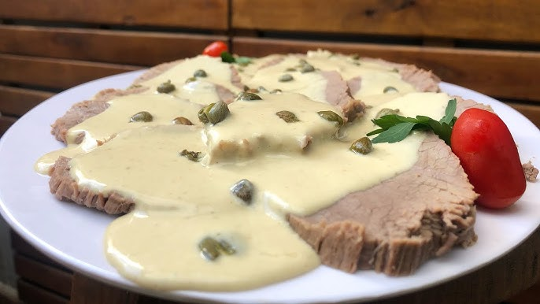

Receta de Vitel Toné de Doña Petrona

El vitel toné (vitello tonnato que significa carne atunada), es una receta sencilla de hacer y versátil de transportar y servir.
Lista de ingredientes
- 1 kg de peceto, 100 g de atún, 6 anchoas
- 2 yemas para la mayonesa y 1 huevo para presentación
- 1/2 taza de aceite, sal y pimienta.
- 1 pocillo de vinagre y 1 cdta. de mostaza.
Lista de Pasos
- Sacar la membrana y la grasa al peceto
- Cocinal el peceto en una cacerola con agua junto a una variedad de verduras
- Hacer mayonesa casera con las 2 yemas y el aceite, procesar la mayonesa con el atún en una licuadora y agregar vinagre, pimienta, mostaza y sal
- Agregar caldo de la preparación si hace falta para que no quede tan espesa.
- Por último, cortar en rodajas el peceto frío, bañar con salsa y espolvorear con huevo duro rallado para la presentación.
¿Quién es Doña Petrona?
Leer Receta Ensalada Rusa
Página de Referencia
Volver al Inicio